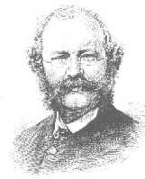

| Map | The 18th Century Cathedral | The Present Cathedral | Williams Burges | The Bells | Home |
William Burges

Burges was was born in London in 1827. When little more than a boy he chose architecture as his career; and at the age of sixteen he began his professional training. This was a period when the Gothic Revival - which may be regarded as the architectural expression of the Romantic Movement - was gathering force; and Burges soon became one of its most enthusiastic disciples. In order to make himself familiar with the great buildings of medieval times he travelled extensively in Europe, and especially in France. It was the Early French style that appealed to him most; and it was this style that inspired much of his best work, including St. Fin Barre's. For an enthusiast such as Burges the ideal way in which to express himself - and to express his admiration for the French Gothic style - would be to design a cathedral and supervise the building of it. But twice, when this dream seemed on the point of fulfillment, he was disappointed. In 1856 there was a competition for plans for a cahedral at Lille; and the plans submitted by Burges were adjudged the best. But, in the end, another architect was appointed. Three years later he was invited to prepare plans for a cathedral at Brisbane; but here, also, the task was eventually entrusted to someone else.
Then, in 1863, his chance came. A group of churchmen in Cork, headed by the Bishop, John Gregg, resolved to replace the existing cathedral by one more worthy of the city and the diocese. As at Lille, there was a competition for plans; and, as at Lille, Burges' entry was judged the best. But, on this occasion, the committee in charge stuck to its decision. Burges was appointed architect; and he supervised the building of the cathedral, through all its stages, down to its completion in 1879.There can be no doubt that it was Burges who inspired the committee to undertake a greater task than they had originally intended. One of the conditions laid down when plans were invited was that the whole building should not cost more than £15,000. Burges admitted frankly that the building he designed could not be completed for less than twice that amount; but the committee found his design so attractive that they resolved to accept it, even if this meant that the task must be completed by stages. And, as time went on, changes and additions proposed by Burges and accepted by the committee added to the magnificence of the building and inevitably to the expense. As Mordaunt Crook puts it, 'Burges managed to turn a provincial cathedral into a project of international importance'. In the end, the building cost, not the original figure of £15,000, nor Burges' first estimate of £30,000, but £100,000, all of it raised by voluntary subscription. (This picture was the original plan for the Choir and Sanctuary taken from a drawing by W.G. Smith.)
The building of St. Fin Barre's was a remarkable achievement. It was built at a time when the Church of Ireland was going through the traumatic experience of disestablishment, when the finances of the church had to be reorganised on a voluntary basis and when prudence might seem to dictate the avoidance of all but essential expenditure. Later generations have good cause to be thankful that Burges' soaring design was matched by the courageous generosity of Bishop John Gregg and his supporters. But, though St. Fin Barre's as we know it could not have come into being without the generosity of our predecessors, it is essentially the creation of Burges himself. He not only conceived and designed the building as a whole, but supervised every detail. Stonework, woodwork, metal-work, glasswork - all must harmonize, all must conform to his own conception of what the total effect should be. In particular, he had very clear ideas of what the relationship between sculpture and architecture should be and he made sure that this relationship was everywhere preserved. When we remember that no fewer than 1,260 pieces of sculpture were built into the fabric of the cathedral, we get some idea of the task he had set himself. The most striking example of Burges' use of sculpture in St. Fin Barre's is the west doorway. Speaking about this while the work was still in progress (1878) Burges declared: 'We are doing a work that has not been attempted since the west front of Wells Cathedral.' The claim is typical of the spirit of the Gothic Revival. Burges certainly did not mean that he was trying to copy something that had already been done elsewhere. His aim was to create something new by applying, in the circumstances of his own time, the principles that had guided craftsmen of an earlier age.
We may say, indeed, that this was his aim in all that he undertook; and it could reasonably be argued that he achieved it more fully in Cork than anywhere else. St. Fin Barre's is not just an imitation of a Gothic cathedral. Though designed and built in the spirit of the Middle Ages, it is yet a new creation and it displays, both in its general effect and in every detail, the unmistakable mark of one of the most distinguished architects of the nineteenth century. This all-pervading influence of Burges was due not only to his own meticulous care but also to the fact that St. Fin Barre's, unlike most great churches, was begun and completed under the guidance of a single architect. The resulting consistency of style is, as Mordaunt Crook says, 'almost unique amongst cathedrals'. But there is another respect also in which St. Fin Barre's might be described as 'almost unique' - or perhaps simply as 'unique' - amongst cathedrals. If one looks at a ground plan of the building and considers its length and breadth, it is no larger than many a parish church, and smaller than some. Yet both internally and externally it gives an impression of spaciousness far in excess of its actual size. To have created, within such modest dimensions, a building with the unmistakable air of a great cathedral is perhaps not the least impressive of Burges' achievements.